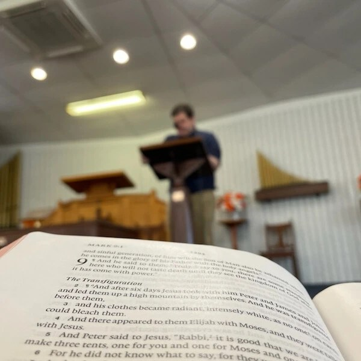
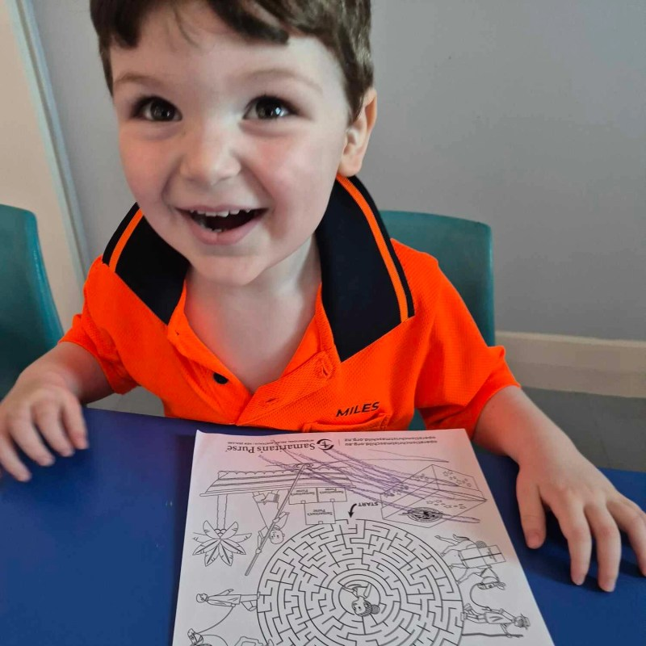
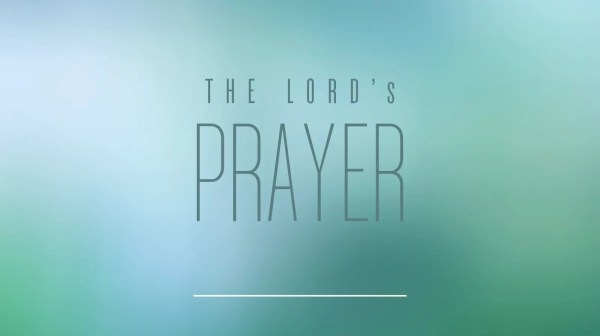

Sundays at 9:00am and 10:30am
Welcome to St Andrew's Townsville
Come along exactly as you are. We gather to pray, hear God's word, sing praises and enjoy time together.
Find out more
Ordinary people who have found hope in Jesus
St Andrew's Presbyterian Church is an ever growing community learning to follow Jesus in the heart of Townsville.

